P60 C 实际Vue审核版
本地合成样例；操作与列表读取结果分开；PATCH/POST全部本地拦截，未发送真实请求。不是全部状态、真实权限或发送验收。未部署。
来源与验证1440 / saved-read-pending
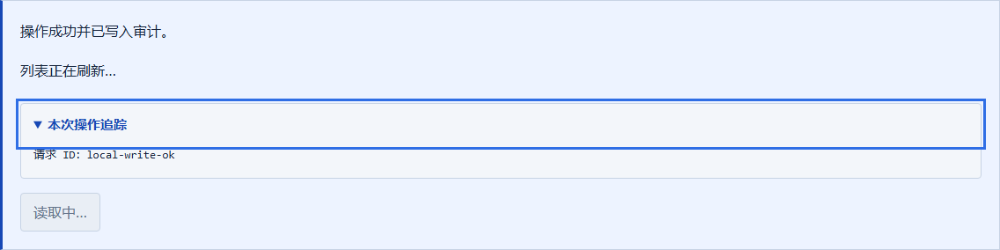
1440 / saved-read-failed-operation
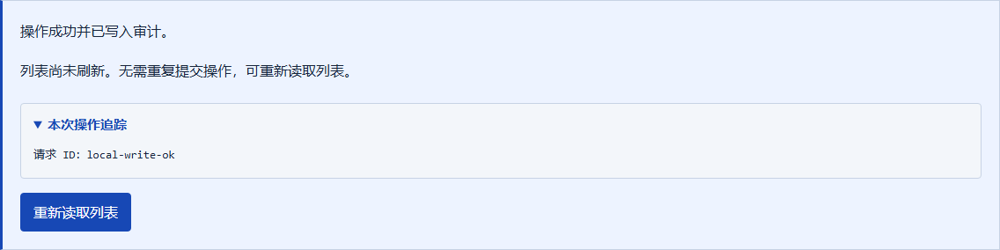
1440 / saved-read-failed-read

1440 / queued-read-failed-operation
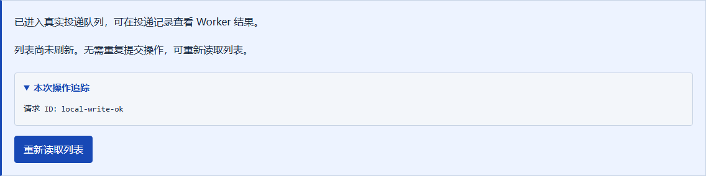
1440 / queued-read-failed-read
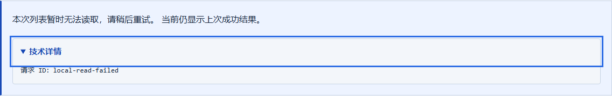
1440 / saved-read-ready
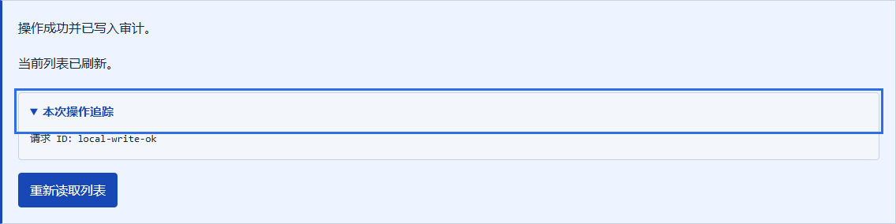
1440 / write-failed
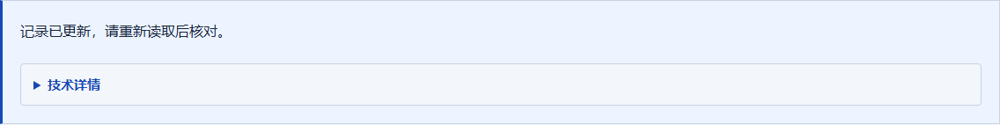
390 / saved-read-pending
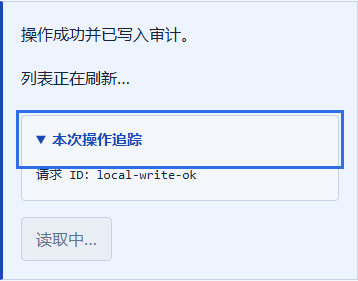
390 / saved-read-failed-operation
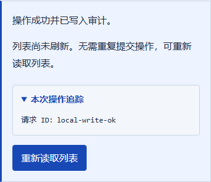
390 / saved-read-failed-read
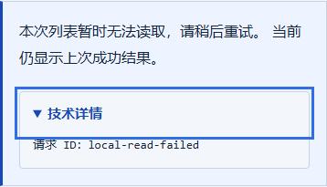
390 / queued-read-failed-operation
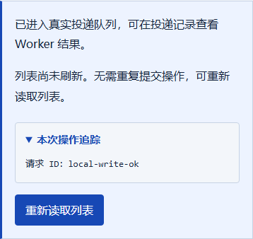
390 / queued-read-failed-read
390 / saved-read-ready
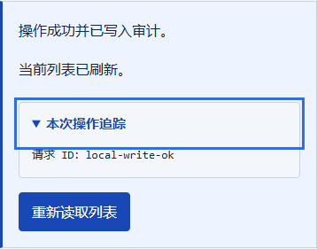
390 / write-failed
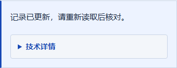